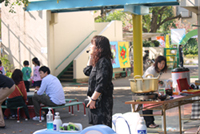
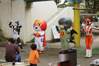
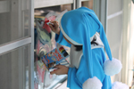
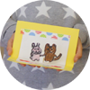
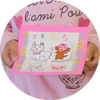
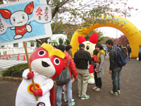
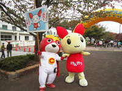

エクラアニマルが行っている様々な活動の一部を紹介します。
 
北原保育園の園庭で行われた、ママさんパパさん向けのフリーマーケットです。キャラ丸くんとドク丸くんのダンスパフォーマンスや、豚汁やパンの販売などがありました。
  
ガラスに絵を描いて消せるまほうのチョークを使った、飛び出すカード作りや、自分だけのアニメーション作りなど、色々なワークショップを行っています。新しく進行中の「1ミニッツアニメ」という企画もあるので、お楽しみに！
 
地域のイベントやお祭りなど、献血カーの行くところへキャラ丸くんもついて行って、お手伝いをします。キャラ丸くんも献血できるかな？
ほとんどの社内イベントは事務室、もしくはだるま堂でこぢんまりと行われます。会社の隣は大きな東大農場です。
たくさんの植物が季節を教えてくれます。
| ミニシアター | 頻度／月に一度 |
| ごみひろい | 頻度／月に一度 |
| エクビデー | 頻度／月に一度 |
| 他 | お花見／忘年会／新年会／市民祭りのパレード／アースデイ |